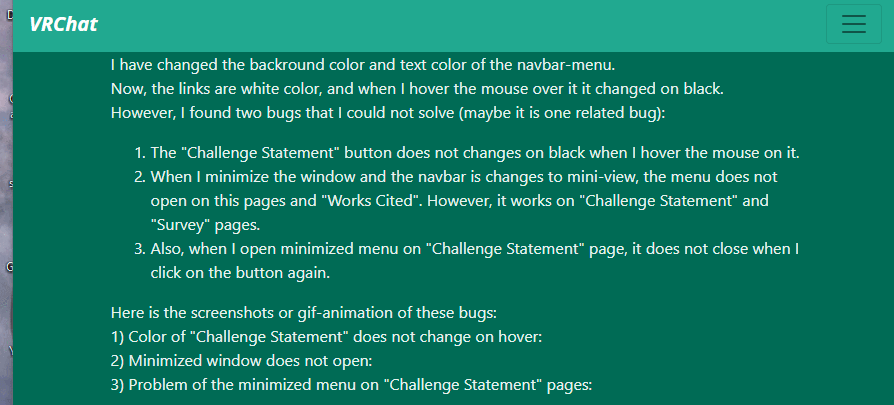
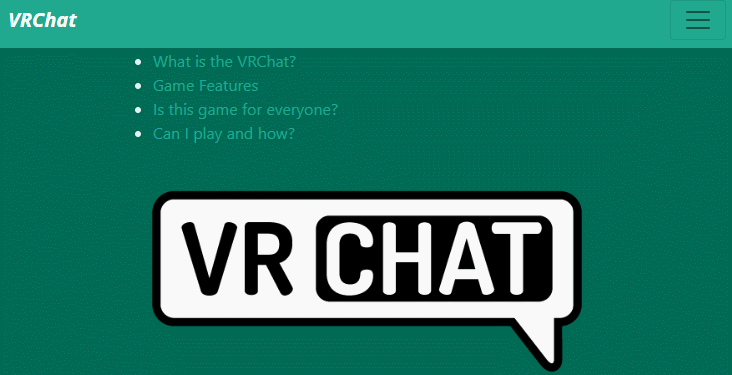

I have changed the backround color and text color of the navbar-menu.
Now, the links are white color, and when I hover the mouse over it it changed on black.
However, I found two bugs that I could not solve (maybe it is one related bug):
Here is the screenshots or gif-animation of these bugs:
1) Color of "Challenge Statement" does not change on hover:
2) Minimized window does not open:

3) Problem of the minimized menu on "Challenge Statement" pages:
